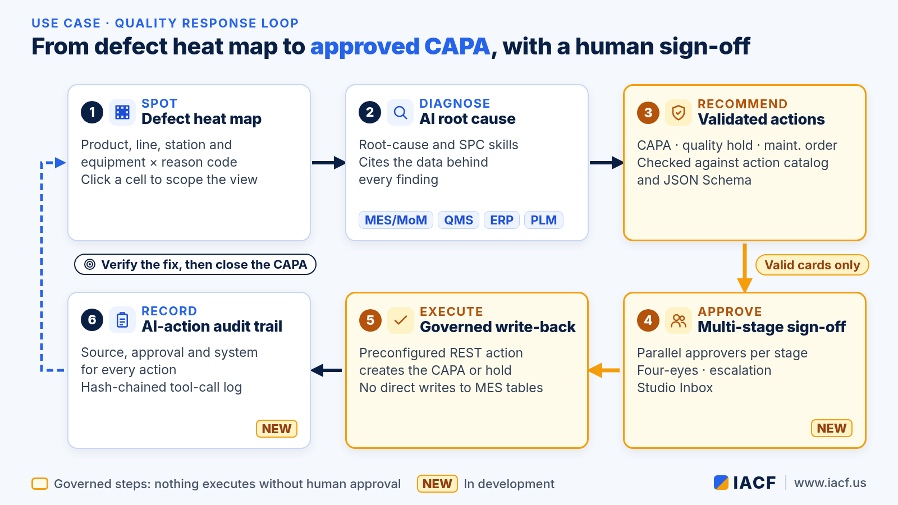
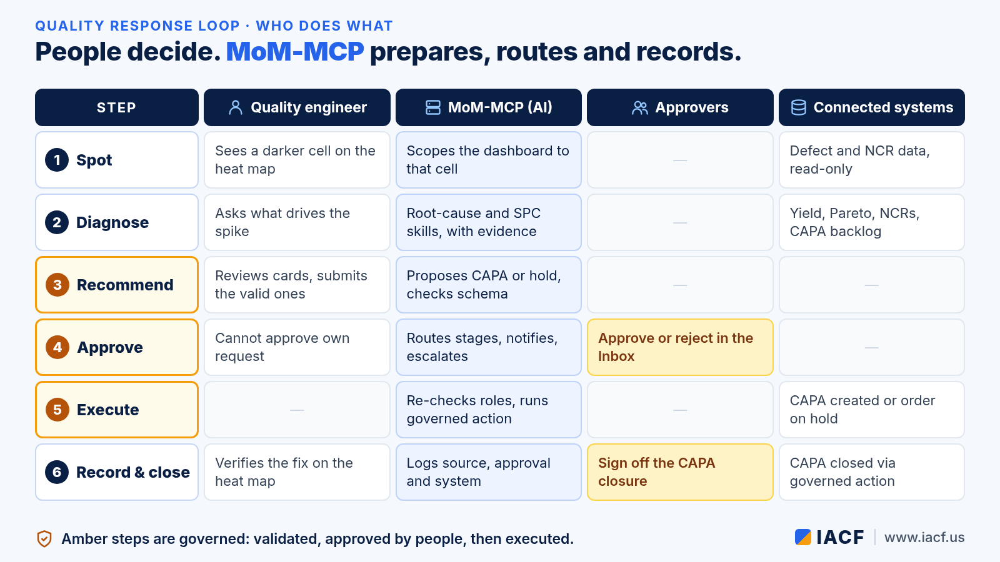
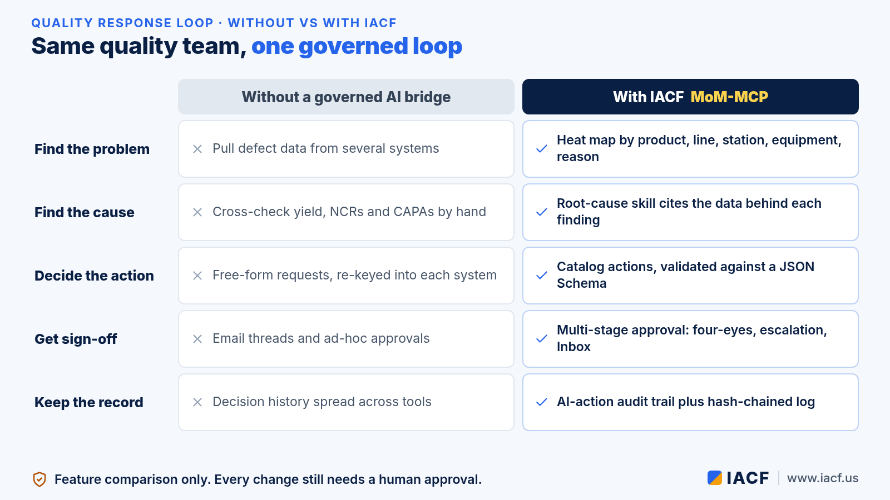

Quality Response Loop: From Defect Heat Map to Root Cause to CAPA, with a Human Sign-Off
2026-10-09
A defect spike is easy to see and hard to act on. The data sits in several systems. The analysis takes time, and the fix has to go through the right people before anything changes on the line. This article walks through one quality response loop, from a heat map to an approved CAPA, and shows how IACF's MoM-MCP supports each step. MoM-MCP is the bridge between AI and large language models (LLMs) and the manufacturing applications a plant already runs: MES/MoM, ERP, PLM, CRM, QMS and others.
If you are new to MoM-MCP, start with our introduction to MoM-MCP. This piece is a walk-through, not a product tour.

The scenario
Consider a plant where a quality engineer starts the morning on a defect dashboard. One production line is noticeably darker on the heat map than it was last week, and most of the new defects share a single reason code. The engineer has three questions: why is this happening, what should we do about it, and who needs to sign off? The scenario is illustrative. It describes how the features work together, not results from a specific customer.Step by step
1. Spot the spike on the defect heat map
MoM-MCP dashboards include a quality defect heat map that crosses defects by product, production line, work station, equipment and reason code. Darker cells mean more defects. Clicking a cell scopes the whole dashboard to that combination, so the Pareto chart, the open NCR count and the detail table all follow the engineer's focus.2. Ask the AI for the root cause
From the dashboard or the Agent Studio chat, the engineer asks what is driving the spike. MoM-MCP runs a packaged quality root-cause skill: a prompt, bound datasets and a validated output shape. The skill works the way a senior quality engineer would:- Flag operations whose first-pass yield is below a threshold, then cross-reference the defect Pareto.
- Check open NCRs and the CAPA backlog for the same defect codes.
- Assign a root-cause category using the 5M+1E fishbone (machine, method, material, man, measurement, environment).
- Cite the specific values behind every finding, and treat isolated defects as "monitor" rather than CAPA material.
3. Get recommended actions that are valid by construction
A quality action skill turns the analysis into proposed actions, drawn only from the tenant's catalog of governed actions:- Create a CAPA for a recurring or statistically significant nonconformance.
- Place a quality hold on a work order when suspect product may still be in process.
- Create a maintenance order when the evidence points at equipment condition.
- Close a CAPA only after its corrective action is verified effective.
4. Route the decision through multi-stage approval
Nothing executes on the AI's say-so. The engineer submits the recommendation, and a multi-stage approval workflow takes over:- Stages run in order, and approvers inside a stage can work in parallel, for example quality and production sign-off at the same time.
- The requester can never approve their own request (four-eyes).
- Approvers see the context: the recommended action, its parameters and the systems it touches. Requests wait in a Studio Inbox, with email notification.
- Escalation by delegation, timeout or an approver's choice keeps requests from stalling.
5. Governed write-back, recorded in the audit trail
After the last stage approves, MoM-MCP re-checks the requester's current permissions and then calls the preconfigured REST action that creates the CAPA or places the hold. It never writes straight into core MES tables. The AI-action audit trail records whether the action came from an AI recommendation, which approval it went through, and which system it ran against, on top of a hash-chained log of every tool call.6. Close the loop
Weeks later, the heat map shows whether the line has cooled down. When the backlog shows the corrective action verified, the same governed path can recommend closing the CAPA, again with a human sign-off.
What changes for the quality team
- One place to look. Heat map, root cause and recommended actions come together in IACF dashboards and Agent Studio instead of being stitched together across several applications.
- Evidence first. The analysis cites the operations, defect codes and records it relied on.
- No bad requests reach approvers. Invalid recommendations are stopped before the Approve button.
- Accountability built in. Approvals, escalations and executions are recorded automatically.
